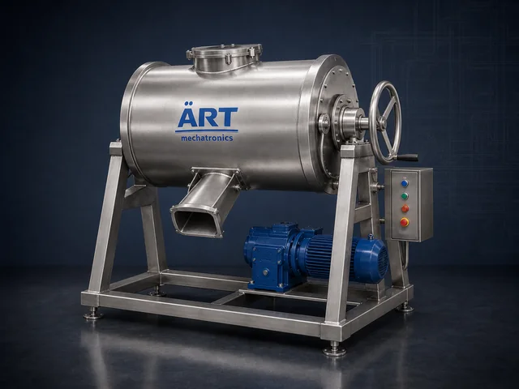
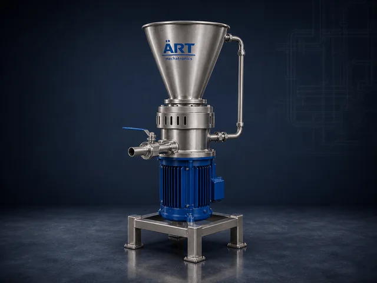
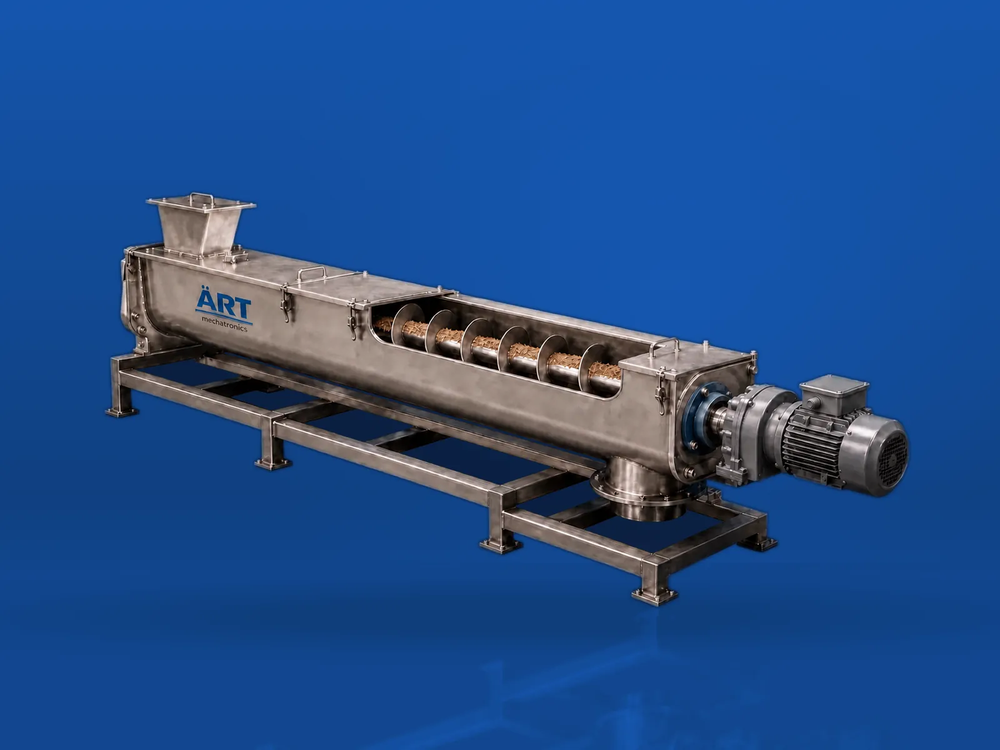
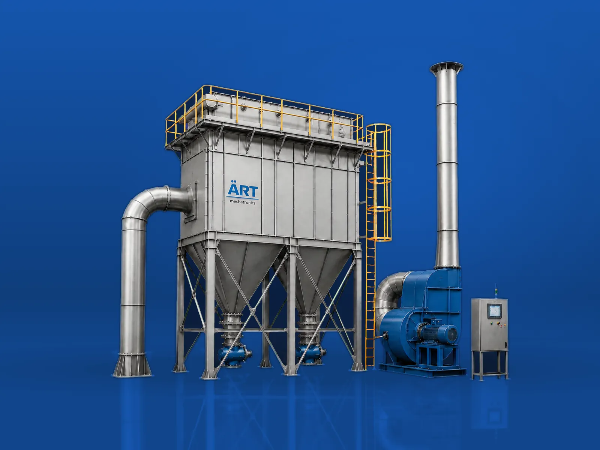

Size reduction & grinding
Bringing material to the particle size the process needs — pulverisers, mills, grinders and crushers.
Browse all products →Pulverisers 4 machines

Impact Pulverizer Machine
An Impact Pulverizer Machine is a high-speed grinding system designed for fine pulverization of materials into uniform…
View details →
Micro Pulverizer Machine
A Micro Pulverizer Machine is an advanced high-speed grinding system designed for ultra-fine pulverization of…
View details →
Pulverizer With Dust Collector
A Pulverizer with Dust Collector is an advanced integrated system that combines high-speed grinding with efficient…
View details →
Powderizer Machine
A Powderizer Machine, commonly known as a Pulverizer Machine or Powder Grinding Machine, is an industrial system…
View details →Mills 8 machines

Hammer Mill Machine
A Hammer Mill Machine is a robust industrial grinder designed to crush, shred, and grind a wide range of materials…
View details →
Roller Mill Machine
A Roller Mill Machine, also known as an Industrial Roller Mill or Roller Grinding Mill, is a highly efficient grinding…
View details →
Stone Mill Machine
A Stone Mill Machine, also known as an Atta Chakki or Stone Grinder, is a traditional yet highly effective grinding…
View details →
Grinding Mill Machine
A Grinding Mill Machine is a versatile industrial system designed for size reduction, pulverization, and fine grinding…
View details →
Ball Mill Machine
A Ball Mill Machine, also known as an Industrial Ball Mill or Ball Grinding Mill, is a highly efficient grinding…
View details →
Pin Mill Machine
A Pin Mill Machine, also known as an Industrial Pin Mill or Pin Mill Grinder, is a high-speed grinding system designed…
View details →
Air Classifier Mill Machine
An Air Classifier Mill Machine (ACM) is an advanced grinding system designed for ultra-fine pulverization and precise…
View details →
Milling Machine
A Milling Machine is an essential industrial system used for grinding, processing, and size reduction of raw materials…
View details →Grinders 4 machines

Grinding Machine
A Grinding Machine is a versatile industrial system used for size reduction, pulverization, and fine grinding of…
View details →
Micronizer Machine
A Micronizer Machine, also known as a Micronizing Mill or Jet Mill Micronizer, is an advanced grinding system designed…
View details →
Wet Grinder
An Industrial Wet Grinder is a grinding machine that reduces soaked, soft or liquid-carrying material into a smooth…
View details →
Colloid Mill
A Colloid Mill is a wet milling machine that reduces and disperses solids inside a liquid by forcing the product…
View details →Crushers & shredders 3 machines

Crushing Machine
A Crushing Machine, also known as an Industrial Crusher Machine, is a heavy-duty equipment used for breaking down…
View details →
Disintegrator Machine
A Disintegrator Machine, also known as an Industrial Disintegrator or Disintegrator Mill, is a high-speed size…
View details →
Shredder Machine
A Shredder Machine, also known as an Industrial Shredder or Waste Shredder, is a powerful size reduction equipment…
View details →Not finding it? Ask us on WhatsApp →
Browse the rest of the range

Material Handling Equipment & Industrial Automation 30 machinesMaterial Handling Equipment & Industrial Automation
See all 30 machines →
Dust Collection & Pollution Control Equipment 17 machinesDust Collection & Pollution Control Equipment
See all 17 machines →